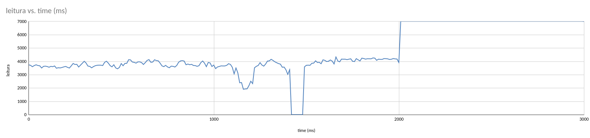

Relatório do Trabalho Prático de Redes de Computadores II
Artur Temporal Coelho e Vinícius Maurício Ribeiro
Universidade Federal do Paraná
Bacharelado em Ciência da Computação
2023/2
O servidor deve ser capaz de atender múltiplos clientes simultaneamente.
Deve ser possível configurar via linha de comando o intervalo de tempo em que cada mensagem do stream é
transmitida.
O número de campos é no mínimo 2, pois obrigatoriamente cada pacote informa sua ordem no stream, começando por
1.
Ao encerrar o cliente ele deve produzir estatísticas sobre o uso do UDP: quantos pacotes foram perdidos e
quantos chegaram fora de ordem.
O cliente deve implementar uma operação sobre os dados recebidos. Exemplo: calcular a média dos valores
recebidos.
Devem ser apresentados logs para múltiplas execuções.
Pelo menos uma das execuções deve ter obrigatoriamente 3 clientes recebendo o stream.
Relatório de como foi feito o trabalho e quais foram os resultados obtidos em uma página HTML
Na entrega:
Link da página web.
Acrescente a todo programa a terminação ".txt" para ser possível visualizar o código fonte no navegador.
Logs de execução dos processos cliente/servidores, que demonstrem a execução correta destes processos.
Escopo
O trabalho simula o stream de dados de um robô seguidor de linha. À medida que o robô percorre a linha, o servidor
- executando no robô -
disponibiliza os dados dos sensores na rede. Os clientes consomem esses dados em tempo real.
Como os autores deste trabalho são integrantes da Equipe de Robótica Yapira da UFPR, os dados obtidos são valores
reais de um robô seguidor
de linha.
O robô utilizado possui uma matriz com 8 sensores de reflitância, posicionados lado a lado. Cada dado enviado pelo
robô representa a posição
da linha em relação aos sensores, que varia de 0 a 7000:
0 indica que a linha está diretamente abaixo do sensor 0 (mais à esquerda);
1000 indica que a linha está diretamente abaixo do sensor 1 (ao lado do sensor 0);
2000 indica que a linha está diretamente abaixo do sensor 2;
...
7000 indica que a linha está diretamente abaixo do sensor 7 (mais à direita).
Um valor de 3500, por exemplo, indica que a linha está entre os sensores 3 e 4.

Imagem 1.0: Gráfico dos dados coletados
O gráfico acima representa a execução do seguidor de linha durante um período de 3 segundos.